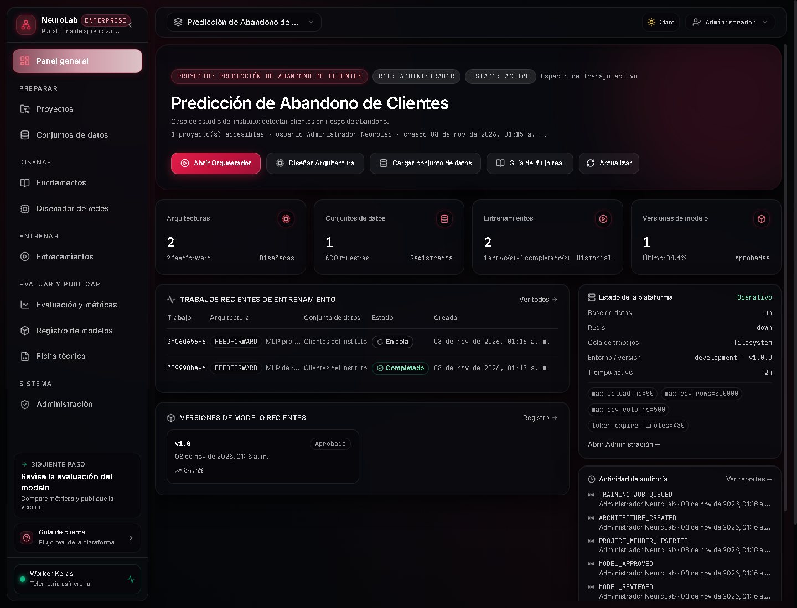
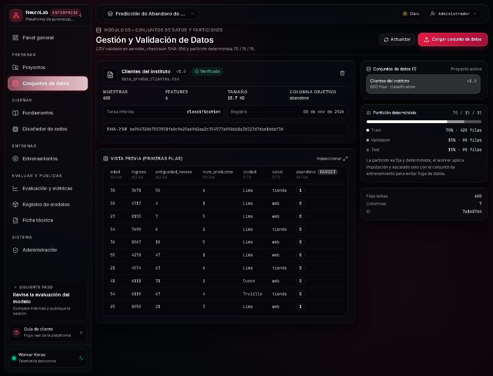
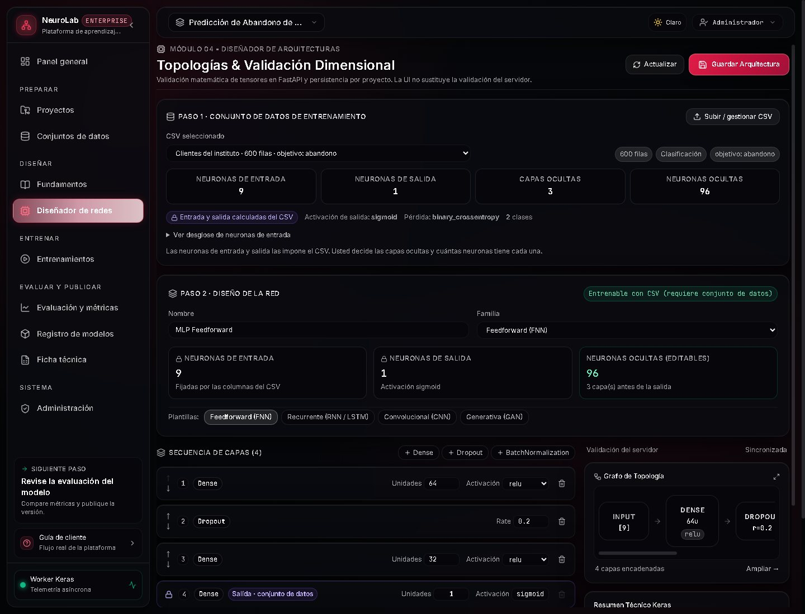
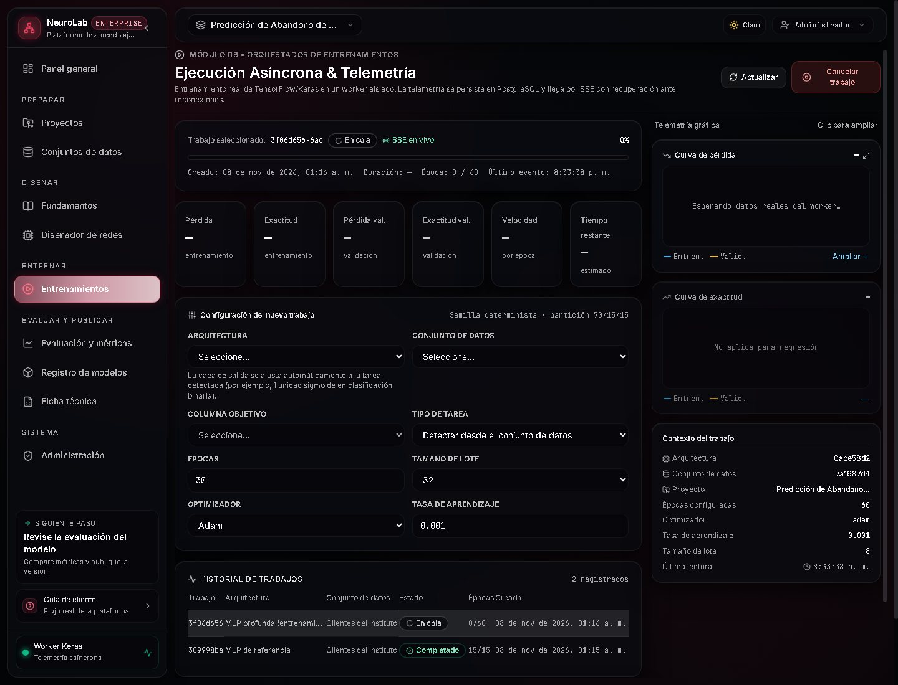
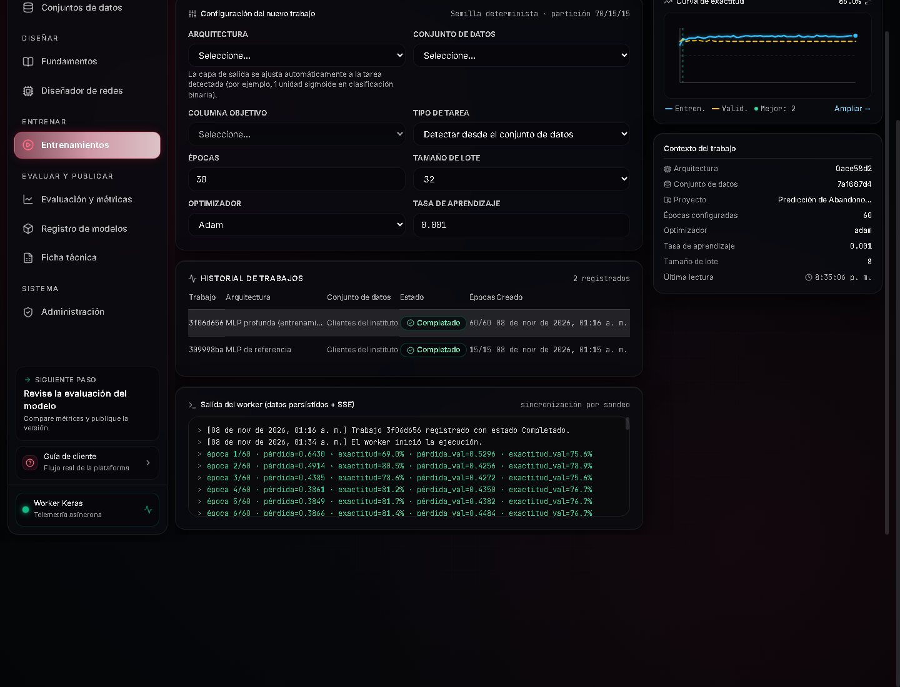
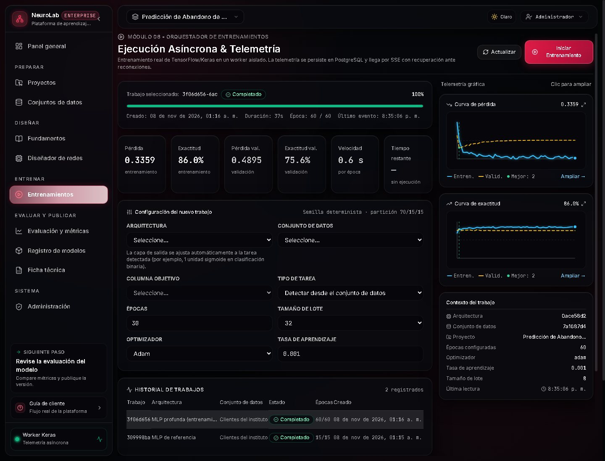
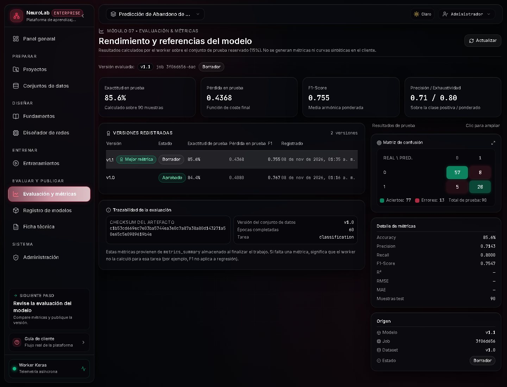
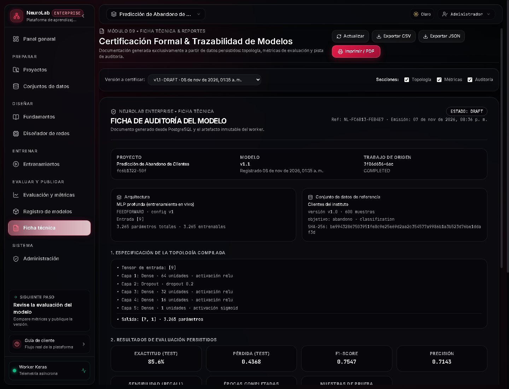
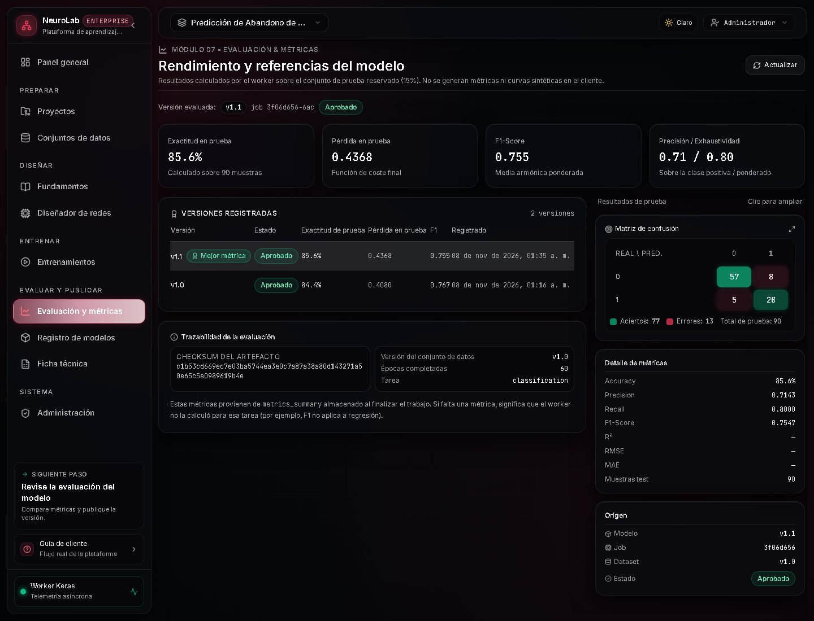

Panel del proyecto
El administrador entra con su cuenta y ve solo el proyecto asignado. El panel resume arquitecturas, datasets, entrenamientos y versiones de modelo, y propone el siguiente paso del flujo.

Conjunto de datos verificado
El dataset se carga una vez, se valida y se le asigna un checksum. El sistema detecta la columna
objetivo abandono, el tipo de tarea y las características de entrada.

be994328…ddaf3d.Diseño de la red
La arquitectura se define antes de entrenar. Para este caso se usa una MLP de tres capas densas
con dropout, salida sigmoide y pérdida binary_crossentropy.

Trabajo en cola
Al lanzar el entrenamiento, la API crea un trabajo persistente con su configuración completa. El estado inicial es En cola hasta que un worker lo reclama.

3f06d656… · 60 épocas · optimizador Adam · batch 8 · semilla 7.Entrenamiento en ejecución
El worker cambia el estado a PREPARING → RUNNING, prepara los datos, entrena y publica telemetría. La interfaz muestra curvas de entrenamiento y validación, velocidad y ETA.

Entrenamiento completado
Al terminar, el worker evalúa el modelo sobre la partición de prueba, calcula baselines, guarda los artefactos y genera la ficha técnica. El job queda en COMPLETED.

Evaluación y métricas
La pantalla de evaluación cruza las predicciones con las etiquetas reales: matriz de confusión, precisión, recall, F1 y comparación con el baseline. Los aciertos se marcan en verde y los errores en rojo.

| Métrica | Valor | Lectura |
|---|---|---|
| Accuracy | 85,56 % | Coincidencia global sobre test |
| Balanced accuracy | 83,85 % | Compensa el desbalance de clases |
| Precision | 71,43 % | De los marcados como abandono, acierta 7 de cada 10 |
| Recall | 80,00 % | Detecta 8 de cada 10 abandonos reales |
| F1 | 75,47 % | Equilibrio entre precisión y recall |
| ROC-AUC | 0,8782 | Buena separación de clases |
Registro en borrador
El modelo nace en estado DRAFT. No puede publicarse sin pasar por revisión: las transiciones permitidas son DRAFT → REVIEWED → APPROVED → RETIRED.
Ficha técnica del modelo
La ficha se genera automáticamente con datos reales: particiones, distribución de clases, arquitectura, hiperparámetros, métricas, baselines, diagnóstico de generalización, reproducibilidad, limitaciones y trazabilidad de artefactos.

model.keras (SHA-256 c1b53cd6…), scaler.pkl, preprocessor.pkl.Aprobación y publicación
Un usuario con permiso revisa la versión y la aprueba. El cambio queda registrado en la auditoría con el estado anterior y el nuevo. La versión aprobada pasa a ser la referencia publicada.
